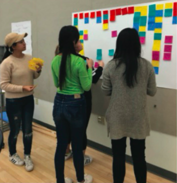
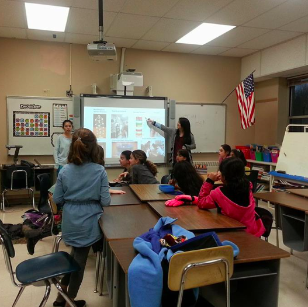
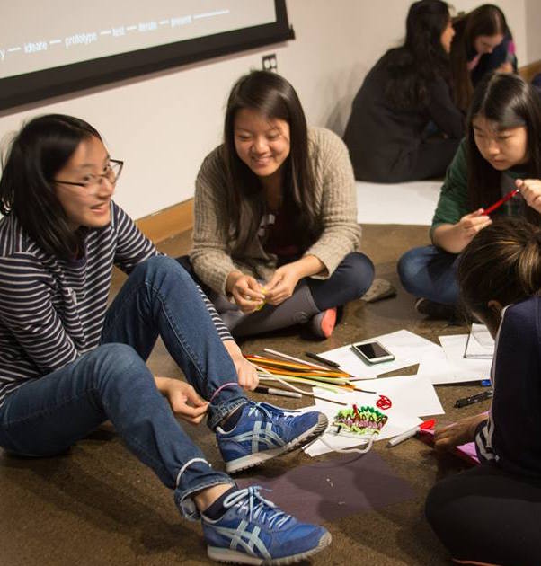

About Me
My name's Emily and I'm an aspiring product designer studying Information
Science at Cornell University. My concentration is in UX Design but I'm also interested
in graphic design, visual arts, and programming.
I believe in using design for social impact.

I love working with people and understanding how they experience their world. Learning about others and creating things to make their lives easier is what motivates me.
Organizing user interview findings on my project team CUSD Sustainable Mobility (left).
I started out with a love for visual arts and technology.

In high school, I was interested in visual art & design, technology, and the intersection of the two subjects. I knew I wanted to pursue something that combined my passions and allowed me to help others.
Leading an afterschool session of GEMS (Girls in Engineering, Math, and Science) Club (left).
Today, I am aspiring to be a user experience designer.

I am lucky to study and do what I love everyday and hope to make a difference with design in the future.
Brainstorming physical product designs at Creative Sprint 2017 (right).
Other things I love:

- Rock and alt/indie music. (Queen, David Bowie, Kevin Devine, and Bleachers are my favorites right now!)
- Nature. (I try to run, hike, climb, or explore everyday!)
- I love cooking and eating food. (Cooking > Baking)
- Playing flute and guitar. (and the ukulele-kind of!)